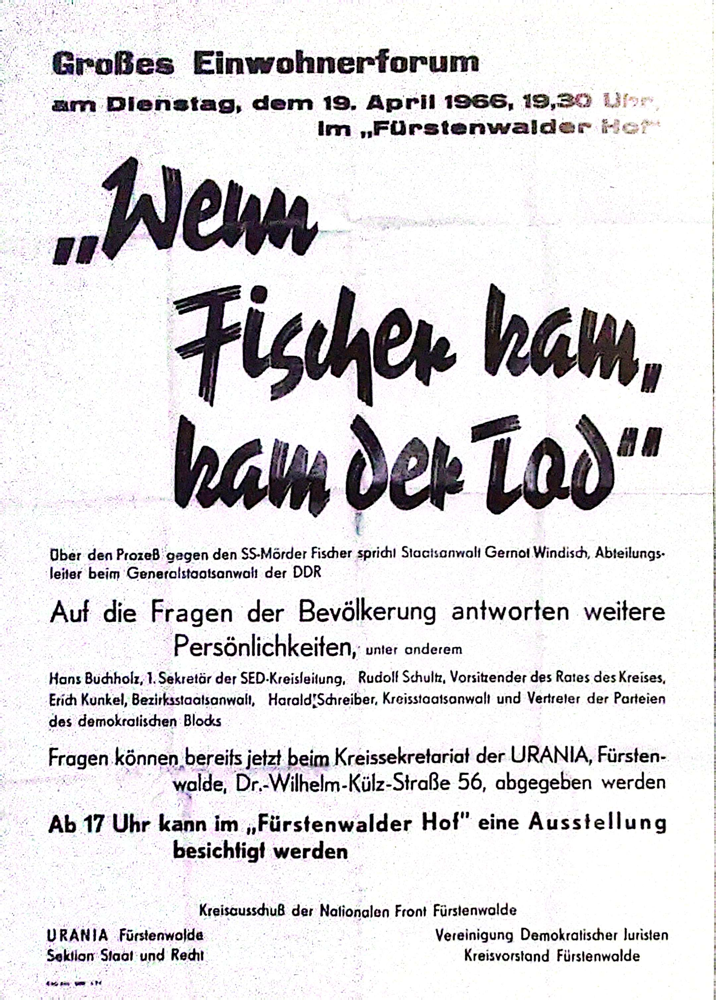

Introduction
This media page provides a curated selection of visual and video resources that enhance the understanding of key Nazi trials. These materials support the historical and legal context of the proceedings, offering a glimpse into the judicial processes and public narratives of the time.
Documentary: The Auschwitz Trial (Frankfurt, 1963–1965)
This documentary footage captures the courtroom atmosphere of the Frankfurt Auschwitz Trial, highlighting testimonies, evidence, and public reactions during the proceedings.
News Footage: Horst Fischer Trial (1965)
Archival footage from East German television showcasing the trial of SS doctor Horst Fischer, including official commentary and ideological framing used in the GDR.
Poster: "Wenn Fischer kam, kam der Tod" (1966)
This GDR propaganda poster, meaning "When Fischer came, death followed," was part of the state’s effort to promote public awareness and condemnation of Nazi crimes through mass education forums.
